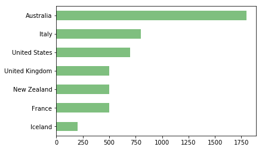
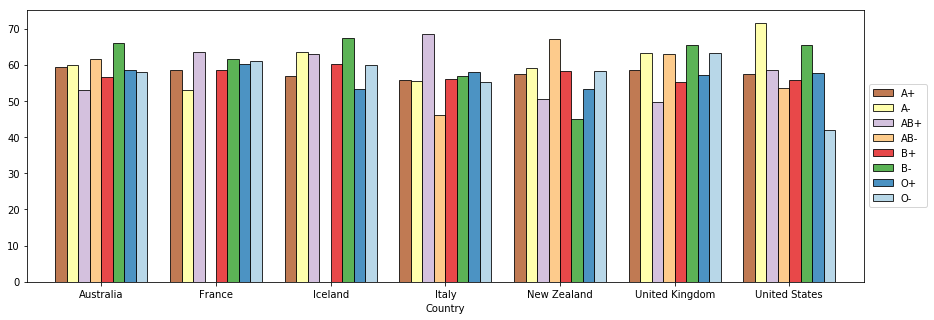
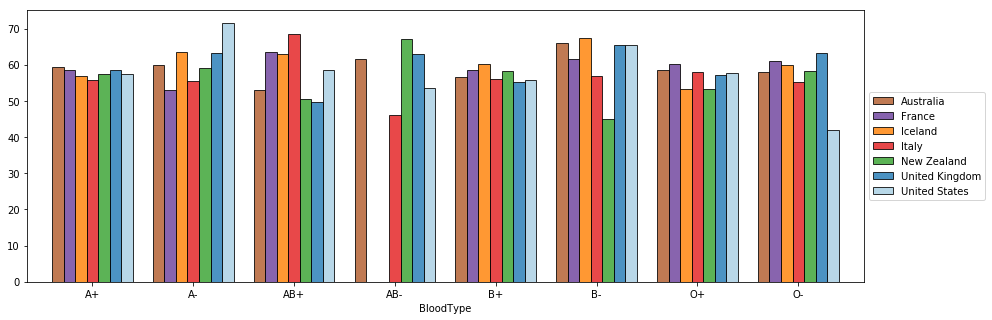

from math import *
import numpy as np
import pandas as pd
from pathlib import Path
%matplotlib inline
import matplotlib.pyplot as plt
from IPython.core.display import display, HTML
display(HTML("<style>.container { width:100% !important; }</style>"))1. Pandas GroupBy
To illustrate how the pandas groupby operation works let’s use some fake data. With numpy it’s trivial to generate random numerical data, however, it’s usually a lot more tedious to generate random people data that looks realistic.
A very useful tool for this is the Fake Name Generator. That’s what I used to generate this dataset.
Let’s load the dataset into a dataframe.
input_path = Path('data/people.csv')
data = pd.read_csv(input_path, encoding='utf-8')data.head()| GivenName | Surname | Gender | StreetAddress | City | Country | Birthday | BloodType | |
|---|---|---|---|---|---|---|---|---|
| 0 | Stepanida | Sukhorukova | female | 62 Ockham Road | EASTER WHYNTIE | United Kingdom | 8/25/1968 | A+ |
| 1 | Hiệu | Lương | male | 4 Iolaire Road | NEW CROSS | United Kingdom | 1/31/1962 | A+ |
| 2 | Petra | Neudorf | female | 56 Victoria Road | LISTON | United Kingdom | 1/10/1964 | B+ |
| 3 | Eho | Amano | female | 83 Stroud Rd | OGMORE | United Kingdom | 4/12/1933 | O- |
| 4 | Noah | Niland | male | 61 Wrexham Rd | FACEBY | United Kingdom | 11/20/1946 | A+ |
The data contains information about fictitious people.
data.count()GivenName 5000
Surname 5000
Gender 5000
StreetAddress 5000
City 5000
Country 5000
Birthday 5000
BloodType 5000
dtype: int64Remark:
We've got different types of variables here. For instance, Gender is a categorical variable, so are BloodType and Country.
Birthday can be thought of as an interval variable, although we'll convert it to an Age variable, which is more convenient for our purpose, and will be treated as a continuous numeric variable.
Notice, however, that by default pandas will identify non-numeric data as a generic object, which is not the most efficient way of handling categorical data. Let's fix that.
data.dtypesGivenName object
Surname object
Gender object
StreetAddress object
City object
Country object
Birthday object
BloodType object
dtype: objectdata['Gender'] = data['Gender'].astype('category')
data['Country'] = data['Country'].astype('category')
data['BloodType'] = data['BloodType'].astype('category')
data.dtypesGivenName object
Surname object
Gender category
StreetAddress object
City object
Country category
Birthday object
BloodType category
dtype: object A. Dealing with dates.
Method 1 - datetime module.
One of the features (columns) in our dataset is Birthday. While this information may be useful if you wanted to
find out, for instance, how many people share a birthday, most of the time we mainly care about their age.
One way to convert the Birthday into an Age feature would be to extract the year and compute the current year minus
the birthday year. The split method of string objects could be used for that, however, there’s a more elegant, and general
way of handling dates in Python using the datetime.strptime function.
Remark:
This isn't necessarily the fastest, or best way to handle date and time objects in pandas.
from datetime import datetime
t1 = datetime.strptime("21/01/2019", "%d/%m/%Y")
print(t1.year)
print(datetime.today()-t1)2019
62 days, 20:14:58.495945The datetime module allows you to manipulate date objects and perform basic operations on dates. It also allows you to
format dates in a consistent way.
We can apply this to our Birthday feature.
data.Birthday[0], data.Birthday[1]('8/25/1968', '1/31/1962')datetime.strptime(data.Birthday[0],"%m/%d/%Y")datetime.datetime(1968, 8, 25, 0, 0)datetime.strptime(data.Birthday[1],"%m/%d/%Y")datetime.datetime(1962, 1, 31, 0, 0)Let’s use the Pandas apply method to format the dates in a consistent way
data.Birthday = data.apply(lambda row: datetime.strptime(row['Birthday'], "%m/%d/%Y"), axis='columns')data.Birthday.head()0 1968-08-25
1 1962-01-31
2 1964-01-10
3 1933-04-12
4 1946-11-20
Name: Birthday, dtype: datetime64[ns]Method 2 - using the to_datetime method of pandas.
original_data = pd.read_csv(input_path, encoding='utf-8')
original_data.Birthday = pd.to_datetime(original_data.Birthday)
original_data.Birthday.head()0 1968-08-25
1 1962-01-31
2 1964-01-10
3 1933-04-12
4 1946-11-20
Name: Birthday, dtype: datetime64[ns]Method 3 - convert at reading time.
original_data = pd.read_csv(input_path, encoding='utf-8', parse_dates=['Birthday'])
original_data.Birthday.head()0 1968-08-25
1 1962-01-31
2 1964-01-10
3 1933-04-12
4 1946-11-20
Name: Birthday, dtype: datetime64[ns]We can now define an Age feature by subtracting the year of birth from the current year.
Remark:
Because we are not hard-coding (typing by hand) the current date, if we come back to this code in a year's time and run it again,
the Age will be updated automatically.
We could compute the age using apply to iterate through the rows of the dataframe…
data.apply(lambda row: datetime.now().year - row['Birthday'].year, axis='columns').head()0 51
1 57
2 55
3 86
4 73
dtype: int64However, it is usually faster to operate on the whole dataframe at one.
Datetime methods on a pandas series (such as a column of a dataframe), can be accessed via the dt method.
(datetime.now().year - data.Birthday.dt.year).head()0 51
1 57
2 55
3 86
4 73
Name: Birthday, dtype: int64data['Age'] = datetime.now().year - data.Birthday.dt.yeardata.head()| GivenName | Surname | Gender | StreetAddress | City | Country | Birthday | BloodType | Age | |
|---|---|---|---|---|---|---|---|---|---|
| 0 | Stepanida | Sukhorukova | female | 62 Ockham Road | EASTER WHYNTIE | United Kingdom | 1968-08-25 | A+ | 51 |
| 1 | Hiệu | Lương | male | 4 Iolaire Road | NEW CROSS | United Kingdom | 1962-01-31 | A+ | 57 |
| 2 | Petra | Neudorf | female | 56 Victoria Road | LISTON | United Kingdom | 1964-01-10 | B+ | 55 |
| 3 | Eho | Amano | female | 83 Stroud Rd | OGMORE | United Kingdom | 1933-04-12 | O- | 86 |
| 4 | Noah | Niland | male | 61 Wrexham Rd | FACEBY | United Kingdom | 1946-11-20 | A+ | 73 |
B. GroupBy feature.
Given the data, common questions to answer would be how certain features are distributed in each country, or for each gender.
These could be as simple as What is the average age in each country? to much more complex questions such as How many people of each blood type are there in each country, for each gender, for a given age group?
Fortunately, Pandas’ GroupBy method allows us to organise the data in ways only limited by our sagacity.
Let's look at the country distribution first.
data.Country.value_counts()Australia 1800
Italy 800
United States 700
United Kingdom 500
New Zealand 500
France 500
Iceland 200
Name: Country, dtype: int64data.Country.value_counts(ascending=True).plot(kind='barh', color='g', alpha=0.5);
The groupby method creates a GroupBy object.
The groupby object is a recipe for how to perform operation on the data.
To use a groupby object, we need to perform some operation on it.
grouped_by_country = data.groupby('Country')
grouped_by_country<pandas.core.groupby.generic.DataFrameGroupBy object at 0x106ca5710>grouped_by_country.size()Country
Australia 1800
France 500
Iceland 200
Italy 800
New Zealand 500
United Kingdom 500
United States 700
dtype: int64grouped_by_country.ngroups7for group in grouped_by_country.groups:
print(group)Australia
France
Iceland
Italy
New Zealand
United Kingdom
United Statesgrouped_by_country['Age'].mean()Country
Australia 57.817778
France 57.944000
Iceland 57.660000
Italy 56.607500
New Zealand 56.630000
United Kingdom 57.740000
United States 57.415714
Name: Age, dtype: float64Remark:
Recall that the apply method allows you to apply an arbitrary function to all the rows in your dataframe. Therefore, as long as you can express your operations as a function (lambda or otherwise), you can include it in the apply, even if your function returns multiple values, provided you wrap them in a tuple.
grouped_by_country['Age'].apply(lambda x: (np.min(x),
f'{x.mean():0.2f}',
np.max(x),
f'{x.std():0.2f}')
)Country
Australia (24, 57.82, 91, 19.49)
France (24, 57.94, 91, 19.54)
Iceland (24, 57.66, 91, 19.46)
Italy (24, 56.61, 91, 18.98)
New Zealand (24, 56.63, 91, 19.05)
United Kingdom (24, 57.74, 91, 19.53)
United States (24, 57.42, 91, 19.29)
Name: Age, dtype: objectA different and nicer output can be obtained using the agg method on a groupby object.
grouped_by_country['Age'].agg(['min','mean','max','std'])| min | mean | max | std | |
|---|---|---|---|---|
| Country | ||||
| Australia | 24 | 57.817778 | 91 | 19.488031 |
| France | 24 | 57.944000 | 91 | 19.541869 |
| Iceland | 24 | 57.660000 | 91 | 19.461194 |
| Italy | 24 | 56.607500 | 91 | 18.981275 |
| New Zealand | 24 | 56.630000 | 91 | 19.049905 |
| United Kingdom | 24 | 57.740000 | 91 | 19.527905 |
| United States | 24 | 57.415714 | 91 | 19.285003 |
For categorical variables, such as BloodType, basic information can be extracted using the describe method.
grouped_by_country['BloodType'].describe()| count | unique | top | freq | |
|---|---|---|---|---|
| Country | ||||
| Australia | 1800 | 8 | O+ | 648 |
| France | 500 | 8 | O+ | 184 |
| Iceland | 200 | 7 | O+ | 86 |
| Italy | 800 | 8 | O+ | 299 |
| New Zealand | 500 | 8 | O+ | 185 |
| United Kingdom | 500 | 8 | O+ | 188 |
| United States | 700 | 8 | O+ | 273 |
grouped_by_country['GivenName'].describe()| count | unique | top | freq | |
|---|---|---|---|---|
| Country | ||||
| Australia | 1800 | 1368 | Michael | 9 |
| France | 500 | 444 | Anna | 4 |
| Iceland | 200 | 193 | Dieter | 2 |
| Italy | 800 | 677 | Jennifer | 6 |
| New Zealand | 500 | 447 | James | 4 |
| United Kingdom | 500 | 450 | Ellis | 3 |
| United States | 700 | 620 | Lily | 5 |
describe only tells us about the most frequent blood type. To get a count of the boodtypes let us use a Counter object.
Which item appears most frequently?
Counting the number of objects of a given type is such a common operation that Python has a very usefulCounter object
from the collections module.
What a Counter object does to a sequence of items is group the elements of the sequence into bins according to their value, and count how many element each bin has. A Counter object also had several useful properties, for instance, to determine the most common object in the sequence.
from collections import Counter
L = ['a', 'b', 'c', 'a', 'a', 'c', 'b', 'b', 'b', 'b']
c = Counter(L)
cCounter({'a': 3, 'b': 5, 'c': 2})print(c.most_common())
print(c.most_common(2))
print(c.most_common(1))[('b', 5), ('a', 3), ('c', 2)]
[('b', 5), ('a', 3)]
[('b', 5)]grouped_by_country['BloodType'].apply(Counter)Country
Australia A+ 468.0
A- 59.0
AB+ 100.0
AB- 8.0
B+ 419.0
B- 24.0
O+ 648.0
O- 74.0
France A+ 145.0
A- 17.0
AB+ 19.0
AB- 1.0
B+ 106.0
B- 4.0
O+ 184.0
O- 24.0
Iceland A+ 45.0
A- 6.0
AB+ 5.0
B+ 44.0
B- 5.0
O+ 86.0
O- 9.0
Italy A+ 207.0
A- 31.0
AB+ 37.0
AB- 5.0
B+ 185.0
B- 4.0
O+ 299.0
O- 32.0
New Zealand A+ 154.0
A- 9.0
AB+ 21.0
AB- 5.0
B+ 100.0
B- 5.0
O+ 185.0
O- 21.0
United Kingdom A+ 132.0
A- 23.0
AB+ 25.0
AB- 4.0
B+ 102.0
B- 7.0
O+ 188.0
O- 19.0
United States A+ 157.0
A- 25.0
AB+ 35.0
AB- 4.0
B+ 157.0
B- 15.0
O+ 273.0
O- 34.0
Name: BloodType, dtype: float64Remark:
Note how the result is one long column of information. This result is actually a Pandas Series object (recall that a Series object is essentially an array with an index).
It may look a bit like a dataframe, but remember that in a dataframe each column corresponds to a unique feature. Here, what looks like the second column is actually a second level for the index. We'll talk about multi-index shortly.
The result as it stands may not be the easiest to read. It would be better if we could transform it back into a dataframe so
that we could compare the results for two countries more easily. In Pandas, you can do that with one command: unstack.
grouped_by_country['BloodType'].apply(Counter).unstack()| A+ | A- | AB+ | AB- | B+ | B- | O+ | O- | |
|---|---|---|---|---|---|---|---|---|
| Country | ||||||||
| Australia | 468.0 | 59.0 | 100.0 | 8.0 | 419.0 | 24.0 | 648.0 | 74.0 |
| France | 145.0 | 17.0 | 19.0 | 1.0 | 106.0 | 4.0 | 184.0 | 24.0 |
| Iceland | 45.0 | 6.0 | 5.0 | NaN | 44.0 | 5.0 | 86.0 | 9.0 |
| Italy | 207.0 | 31.0 | 37.0 | 5.0 | 185.0 | 4.0 | 299.0 | 32.0 |
| New Zealand | 154.0 | 9.0 | 21.0 | 5.0 | 100.0 | 5.0 | 185.0 | 21.0 |
| United Kingdom | 132.0 | 23.0 | 25.0 | 4.0 | 102.0 | 7.0 | 188.0 | 19.0 |
| United States | 157.0 | 25.0 | 35.0 | 4.0 | 157.0 | 15.0 | 273.0 | 34.0 |
If we want to switch the index and the columns around, we need to specify the level parameter in unstack() which, by default, is -1, that is the last (innermost) level of the index.
grouped_by_country['BloodType'].apply(Counter).unstack(level=0)| Country | Australia | France | Iceland | Italy | New Zealand | United Kingdom | United States |
|---|---|---|---|---|---|---|---|
| A+ | 468.0 | 145.0 | 45.0 | 207.0 | 154.0 | 132.0 | 157.0 |
| A- | 59.0 | 17.0 | 6.0 | 31.0 | 9.0 | 23.0 | 25.0 |
| AB+ | 100.0 | 19.0 | 5.0 | 37.0 | 21.0 | 25.0 | 35.0 |
| AB- | 8.0 | 1.0 | NaN | 5.0 | 5.0 | 4.0 | 4.0 |
| B+ | 419.0 | 106.0 | 44.0 | 185.0 | 100.0 | 102.0 | 157.0 |
| B- | 24.0 | 4.0 | 5.0 | 4.0 | 5.0 | 7.0 | 15.0 |
| O+ | 648.0 | 184.0 | 86.0 | 299.0 | 185.0 | 188.0 | 273.0 |
| O- | 74.0 | 24.0 | 9.0 | 32.0 | 21.0 | 19.0 | 34.0 |
The level can also be specified by name
grouped_by_country['BloodType'].apply(Counter).unstack(level='Country')| Country | Australia | France | Iceland | Italy | New Zealand | United Kingdom | United States |
|---|---|---|---|---|---|---|---|
| A+ | 468.0 | 145.0 | 45.0 | 207.0 | 154.0 | 132.0 | 157.0 |
| A- | 59.0 | 17.0 | 6.0 | 31.0 | 9.0 | 23.0 | 25.0 |
| AB+ | 100.0 | 19.0 | 5.0 | 37.0 | 21.0 | 25.0 | 35.0 |
| AB- | 8.0 | 1.0 | NaN | 5.0 | 5.0 | 4.0 | 4.0 |
| B+ | 419.0 | 106.0 | 44.0 | 185.0 | 100.0 | 102.0 | 157.0 |
| B- | 24.0 | 4.0 | 5.0 | 4.0 | 5.0 | 7.0 | 15.0 |
| O+ | 648.0 | 184.0 | 86.0 | 299.0 | 185.0 | 188.0 | 273.0 |
| O- | 74.0 | 24.0 | 9.0 | 32.0 | 21.0 | 19.0 | 34.0 |
Note that we have a bunch of NaN in our dataframe. This indicates that no one from Iceland has blood type AB+ in our dataset.
Since there was no such data in our dataset, it appears as a missing value.
However, here, a value of 0 would be more appropriate. We can tell the dataframe to
replace its missing values by 0 using the fillna method.
Since we’re dealing with count data, it’s also a good idea to convert the type to int.
grouped_by_country['BloodType'].apply(Counter).unstack().fillna(0).astype(int)| A+ | A- | AB+ | AB- | B+ | B- | O+ | O- | |
|---|---|---|---|---|---|---|---|---|
| Country | ||||||||
| Australia | 468 | 59 | 100 | 8 | 419 | 24 | 648 | 74 |
| France | 145 | 17 | 19 | 1 | 106 | 4 | 184 | 24 |
| Iceland | 45 | 6 | 5 | 0 | 44 | 5 | 86 | 9 |
| Italy | 207 | 31 | 37 | 5 | 185 | 4 | 299 | 32 |
| New Zealand | 154 | 9 | 21 | 5 | 100 | 5 | 185 | 21 |
| United Kingdom | 132 | 23 | 25 | 4 | 102 | 7 | 188 | 19 |
| United States | 157 | 25 | 35 | 4 | 157 | 15 | 273 | 34 |
Remark:
We are using fake data so don't give too much credence to these results.
This being said, blood type frequencies do vary across countries and you can read more about it here.
C. GroupBy on multiple features.
Of, course, GroupBy operations aren’t limited to single features.
If we want to see the data grouped by country and blood type , we just need to specify both features in constructing the GroupBy object.
Note that with a groupby on multiple features we can obtain the previous result in a different way.
data.groupby(['Country','BloodType']).count().iloc[:, 0].unstack().fillna(0).astype(int)| BloodType | A+ | A- | AB+ | AB- | B+ | B- | O+ | O- |
|---|---|---|---|---|---|---|---|---|
| Country | ||||||||
| Australia | 468 | 59 | 100 | 8 | 419 | 24 | 648 | 74 |
| France | 145 | 17 | 19 | 1 | 106 | 4 | 184 | 24 |
| Iceland | 45 | 6 | 5 | 0 | 44 | 5 | 86 | 9 |
| Italy | 207 | 31 | 37 | 5 | 185 | 4 | 299 | 32 |
| New Zealand | 154 | 9 | 21 | 5 | 100 | 5 | 185 | 21 |
| United Kingdom | 132 | 23 | 25 | 4 | 102 | 7 | 188 | 19 |
| United States | 157 | 25 | 35 | 4 | 157 | 15 | 273 | 34 |
Let’s group our data based on country and gender.
grouped_by_country_and_gender = data.groupby(['Country', 'Gender'])
grouped_by_country_and_gender['BloodType'].apply(Counter).unstack()| A+ | A- | AB+ | AB- | B+ | B- | O+ | O- | ||
|---|---|---|---|---|---|---|---|---|---|
| Country | Gender | ||||||||
| Australia | female | 229.0 | 29.0 | 54.0 | 4.0 | 205.0 | 13.0 | 328.0 | 41.0 |
| male | 239.0 | 30.0 | 46.0 | 4.0 | 214.0 | 11.0 | 320.0 | 33.0 | |
| France | female | 76.0 | 11.0 | 10.0 | NaN | 47.0 | 2.0 | 79.0 | 16.0 |
| male | 69.0 | 6.0 | 9.0 | 1.0 | 59.0 | 2.0 | 105.0 | 8.0 | |
| Iceland | female | 22.0 | 5.0 | 2.0 | NaN | 17.0 | 4.0 | 34.0 | 8.0 |
| male | 23.0 | 1.0 | 3.0 | NaN | 27.0 | 1.0 | 52.0 | 1.0 | |
| Italy | female | 102.0 | 14.0 | 22.0 | 1.0 | 89.0 | 1.0 | 160.0 | 17.0 |
| male | 105.0 | 17.0 | 15.0 | 4.0 | 96.0 | 3.0 | 139.0 | 15.0 | |
| New Zealand | female | 75.0 | 5.0 | 8.0 | 1.0 | 53.0 | 2.0 | 91.0 | 9.0 |
| male | 79.0 | 4.0 | 13.0 | 4.0 | 47.0 | 3.0 | 94.0 | 12.0 | |
| United Kingdom | female | 65.0 | 6.0 | 14.0 | 1.0 | 55.0 | 4.0 | 99.0 | 13.0 |
| male | 67.0 | 17.0 | 11.0 | 3.0 | 47.0 | 3.0 | 89.0 | 6.0 | |
| United States | female | 89.0 | 13.0 | 18.0 | 3.0 | 77.0 | 7.0 | 138.0 | 12.0 |
| male | 68.0 | 12.0 | 17.0 | 1.0 | 80.0 | 8.0 | 135.0 | 22.0 |
Once again let’s replace missing values by 0.
grouped_by_country_and_gender['BloodType'].apply(Counter).unstack().fillna(0).astype(int)| A+ | A- | AB+ | AB- | B+ | B- | O+ | O- | ||
|---|---|---|---|---|---|---|---|---|---|
| Country | Gender | ||||||||
| Australia | female | 229 | 29 | 54 | 4 | 205 | 13 | 328 | 41 |
| male | 239 | 30 | 46 | 4 | 214 | 11 | 320 | 33 | |
| France | female | 76 | 11 | 10 | 0 | 47 | 2 | 79 | 16 |
| male | 69 | 6 | 9 | 1 | 59 | 2 | 105 | 8 | |
| Iceland | female | 22 | 5 | 2 | 0 | 17 | 4 | 34 | 8 |
| male | 23 | 1 | 3 | 0 | 27 | 1 | 52 | 1 | |
| Italy | female | 102 | 14 | 22 | 1 | 89 | 1 | 160 | 17 |
| male | 105 | 17 | 15 | 4 | 96 | 3 | 139 | 15 | |
| New Zealand | female | 75 | 5 | 8 | 1 | 53 | 2 | 91 | 9 |
| male | 79 | 4 | 13 | 4 | 47 | 3 | 94 | 12 | |
| United Kingdom | female | 65 | 6 | 14 | 1 | 55 | 4 | 99 | 13 |
| male | 67 | 17 | 11 | 3 | 47 | 3 | 89 | 6 | |
| United States | female | 89 | 13 | 18 | 3 | 77 | 7 | 138 | 12 |
| male | 68 | 12 | 17 | 1 | 80 | 8 | 135 | 22 |
grouped_by_country_and_gender.mean()| Age | ||
|---|---|---|
| Country | Gender | |
| Australia | female | 58.101883 |
| male | 57.531773 | |
| France | female | 59.207469 |
| male | 56.768340 | |
| Iceland | female | 57.315217 |
| male | 57.953704 | |
| Italy | female | 57.300493 |
| male | 55.893401 | |
| New Zealand | female | 55.823770 |
| male | 57.398438 | |
| United Kingdom | female | 57.284047 |
| male | 58.222222 | |
| United States | female | 57.299720 |
| male | 57.536443 |
Notice how we didn’t specify the Age feature. Pandas automatically outputs results for which the mean function makes sense. Here only Age fits the bill.
Like with any dataframe, you can also use apply to map a function to the grouped data, however, for anything more complex, like applying multiple functions at once, the agg method is more convenient.
grouped_by_country_and_gender['Age'].agg(['min','max','mean','std'])| min | max | mean | std | ||
|---|---|---|---|---|---|
| Country | Gender | ||||
| Australia | female | 24 | 91 | 58.101883 | 19.587278 |
| male | 24 | 91 | 57.531773 | 19.394326 | |
| France | female | 25 | 91 | 59.207469 | 19.041143 |
| male | 24 | 91 | 56.768340 | 19.961407 | |
| Iceland | female | 24 | 91 | 57.315217 | 19.527343 |
| male | 24 | 91 | 57.953704 | 19.490896 | |
| Italy | female | 24 | 91 | 57.300493 | 19.116494 |
| male | 24 | 90 | 55.893401 | 18.838508 | |
| New Zealand | female | 24 | 91 | 55.823770 | 19.546233 |
| male | 24 | 91 | 57.398438 | 18.570202 | |
| United Kingdom | female | 24 | 91 | 57.284047 | 20.168651 |
| male | 24 | 91 | 58.222222 | 18.856132 | |
| United States | female | 24 | 91 | 57.299720 | 19.167134 |
| male | 24 | 91 | 57.536443 | 19.434197 |
For descriptive statistics of numerical data, the quantile function is also useful.
Remark:
The 0.5 quantile is the median of our data.
grouped_by_country_and_gender['Age'].quantile((0.10, 0.25, 0.5, 0.75, 0.90)).unstack()| 0.1 | 0.25 | 0.5 | 0.75 | 0.9 | ||
|---|---|---|---|---|---|---|
| Country | Gender | |||||
| Australia | female | 31.0 | 41.00 | 58.0 | 75.00 | 85.0 |
| male | 30.0 | 41.00 | 58.0 | 74.00 | 85.0 | |
| France | female | 31.0 | 44.00 | 61.0 | 76.00 | 84.0 |
| male | 30.0 | 37.00 | 57.0 | 75.00 | 83.0 | |
| Iceland | female | 32.1 | 40.75 | 59.0 | 74.00 | 83.9 |
| male | 32.0 | 42.00 | 56.5 | 74.00 | 85.0 | |
| Italy | female | 31.0 | 41.00 | 57.0 | 73.00 | 85.0 |
| male | 31.0 | 39.00 | 55.0 | 71.00 | 84.0 | |
| New Zealand | female | 29.3 | 39.00 | 54.0 | 72.25 | 83.0 |
| male | 32.0 | 41.00 | 58.0 | 72.00 | 83.5 | |
| United Kingdom | female | 29.6 | 39.00 | 57.0 | 75.00 | 85.0 |
| male | 30.2 | 43.00 | 59.0 | 73.00 | 83.0 | |
| United States | female | 31.0 | 41.00 | 57.0 | 74.00 | 84.0 |
| male | 30.0 | 40.50 | 58.0 | 74.00 | 83.0 |
How can we use the grouped_by_country_and_gender object to output the number of people who were born
on a given month (numbered 1 to 12), for each country, and for each gender?
Hint:
This can be done in one line using apply and value_counts, but you need to make sure you keep track of the type of object you are dealing with at each stage of the pipeline.
# Method 1 - one liner
(grouped_by_country_and_gender['Birthday']
.apply(lambda x: x.dt.month.value_counts())
.unstack()
.fillna(0))| 1 | 2 | 3 | 4 | 5 | 6 | 7 | 8 | 9 | 10 | 11 | 12 | ||
|---|---|---|---|---|---|---|---|---|---|---|---|---|---|
| Country | Gender | ||||||||||||
| Australia | female | 83 | 75 | 70 | 66 | 71 | 78 | 90 | 77 | 70 | 65 | 73 | 85 |
| male | 69 | 64 | 74 | 71 | 74 | 57 | 77 | 91 | 80 | 81 | 81 | 78 | |
| France | female | 26 | 15 | 18 | 13 | 30 | 22 | 22 | 19 | 11 | 21 | 21 | 23 |
| male | 22 | 15 | 22 | 28 | 19 | 22 | 26 | 23 | 26 | 22 | 16 | 18 | |
| Iceland | female | 7 | 11 | 3 | 6 | 5 | 10 | 10 | 12 | 9 | 4 | 7 | 8 |
| male | 7 | 11 | 15 | 2 | 8 | 9 | 11 | 6 | 12 | 10 | 9 | 8 | |
| Italy | female | 31 | 34 | 39 | 33 | 36 | 28 | 33 | 36 | 36 | 37 | 34 | 29 |
| male | 31 | 28 | 35 | 41 | 27 | 28 | 37 | 33 | 29 | 33 | 33 | 39 | |
| New Zealand | female | 18 | 20 | 19 | 21 | 22 | 26 | 26 | 15 | 14 | 23 | 23 | 17 |
| male | 21 | 22 | 16 | 22 | 30 | 19 | 16 | 25 | 18 | 25 | 23 | 19 | |
| United Kingdom | female | 17 | 21 | 19 | 22 | 14 | 20 | 31 | 22 | 19 | 24 | 34 | 14 |
| male | 21 | 16 | 22 | 26 | 20 | 21 | 23 | 18 | 17 | 21 | 19 | 19 | |
| United States | female | 38 | 32 | 35 | 24 | 37 | 25 | 25 | 25 | 32 | 31 | 21 | 32 |
| male | 44 | 30 | 23 | 25 | 23 | 29 | 31 | 29 | 26 | 28 | 26 | 29 |
# Method 2 - Starting from the original data
# create a month series first and use it to perform groupby
months = data.Birthday.dt.month
(data
.groupby(['Country', 'Gender', months])['Age']
.count()
.unstack()
.fillna(0))| Birthday | 1 | 2 | 3 | 4 | 5 | 6 | 7 | 8 | 9 | 10 | 11 | 12 | |
|---|---|---|---|---|---|---|---|---|---|---|---|---|---|
| Country | Gender | ||||||||||||
| Australia | female | 83 | 75 | 70 | 66 | 71 | 78 | 90 | 77 | 70 | 65 | 73 | 85 |
| male | 69 | 64 | 74 | 71 | 74 | 57 | 77 | 91 | 80 | 81 | 81 | 78 | |
| France | female | 26 | 15 | 18 | 13 | 30 | 22 | 22 | 19 | 11 | 21 | 21 | 23 |
| male | 22 | 15 | 22 | 28 | 19 | 22 | 26 | 23 | 26 | 22 | 16 | 18 | |
| Iceland | female | 7 | 11 | 3 | 6 | 5 | 10 | 10 | 12 | 9 | 4 | 7 | 8 |
| male | 7 | 11 | 15 | 2 | 8 | 9 | 11 | 6 | 12 | 10 | 9 | 8 | |
| Italy | female | 31 | 34 | 39 | 33 | 36 | 28 | 33 | 36 | 36 | 37 | 34 | 29 |
| male | 31 | 28 | 35 | 41 | 27 | 28 | 37 | 33 | 29 | 33 | 33 | 39 | |
| New Zealand | female | 18 | 20 | 19 | 21 | 22 | 26 | 26 | 15 | 14 | 23 | 23 | 17 |
| male | 21 | 22 | 16 | 22 | 30 | 19 | 16 | 25 | 18 | 25 | 23 | 19 | |
| United Kingdom | female | 17 | 21 | 19 | 22 | 14 | 20 | 31 | 22 | 19 | 24 | 34 | 14 |
| male | 21 | 16 | 22 | 26 | 20 | 21 | 23 | 18 | 17 | 21 | 19 | 19 | |
| United States | female | 38 | 32 | 35 | 24 | 37 | 25 | 25 | 25 | 32 | 31 | 21 | 32 |
| male | 44 | 30 | 23 | 25 | 23 | 29 | 31 | 29 | 26 | 28 | 26 | 29 |
# Note that although we've used 'Age' here, any feature would have done.
# Do you see why?
# Method 3 - Starting from the original data and assign a new month column
(data
.assign(month=data.Birthday.dt.month)
.groupby(['Country', 'Gender', 'month'])['Age']
.count()
.unstack()
.fillna(0))| month | 1 | 2 | 3 | 4 | 5 | 6 | 7 | 8 | 9 | 10 | 11 | 12 | |
|---|---|---|---|---|---|---|---|---|---|---|---|---|---|
| Country | Gender | ||||||||||||
| Australia | female | 83 | 75 | 70 | 66 | 71 | 78 | 90 | 77 | 70 | 65 | 73 | 85 |
| male | 69 | 64 | 74 | 71 | 74 | 57 | 77 | 91 | 80 | 81 | 81 | 78 | |
| France | female | 26 | 15 | 18 | 13 | 30 | 22 | 22 | 19 | 11 | 21 | 21 | 23 |
| male | 22 | 15 | 22 | 28 | 19 | 22 | 26 | 23 | 26 | 22 | 16 | 18 | |
| Iceland | female | 7 | 11 | 3 | 6 | 5 | 10 | 10 | 12 | 9 | 4 | 7 | 8 |
| male | 7 | 11 | 15 | 2 | 8 | 9 | 11 | 6 | 12 | 10 | 9 | 8 | |
| Italy | female | 31 | 34 | 39 | 33 | 36 | 28 | 33 | 36 | 36 | 37 | 34 | 29 |
| male | 31 | 28 | 35 | 41 | 27 | 28 | 37 | 33 | 29 | 33 | 33 | 39 | |
| New Zealand | female | 18 | 20 | 19 | 21 | 22 | 26 | 26 | 15 | 14 | 23 | 23 | 17 |
| male | 21 | 22 | 16 | 22 | 30 | 19 | 16 | 25 | 18 | 25 | 23 | 19 | |
| United Kingdom | female | 17 | 21 | 19 | 22 | 14 | 20 | 31 | 22 | 19 | 24 | 34 | 14 |
| male | 21 | 16 | 22 | 26 | 20 | 21 | 23 | 18 | 17 | 21 | 19 | 19 | |
| United States | female | 38 | 32 | 35 | 24 | 37 | 25 | 25 | 25 | 32 | 31 | 21 | 32 |
| male | 44 | 30 | 23 | 25 | 23 | 29 | 31 | 29 | 26 | 28 | 26 | 29 |
D. MultiIndex.
We can of course group the data by more than 2 features.
However, results might get a bit harder to take in.s = data.groupby(['Country','Gender','BloodType'])['Age'].mean().round(2)
sCountry Gender BloodType
Australia female A+ 59.36
A- 59.90
AB+ 53.13
AB- 61.50
B+ 56.62
B- 66.00
O+ 58.46
O- 58.02
male A+ 57.67
A- 51.70
AB+ 59.98
AB- 62.00
B+ 58.79
B- 44.73
O+ 56.94
O- 59.76
France female A+ 58.54
A- 53.09
AB+ 63.40
B+ 58.47
B- 61.50
O+ 60.18
O- 61.06
male A+ 60.81
A- 56.00
AB+ 62.78
AB- 41.00
B+ 55.03
B- 67.00
O+ 53.90
...
United Kingdom female AB+ 49.79
AB- 63.00
B+ 55.33
B- 65.50
O+ 57.16
O- 63.23
male A+ 57.39
A- 60.41
AB+ 53.91
AB- 65.33
B+ 59.68
B- 32.67
O+ 58.37
O- 64.83
United States female A+ 57.46
A- 71.54
AB+ 58.44
AB- 53.67
B+ 55.75
B- 65.57
O+ 57.57
O- 41.83
male A+ 55.07
A- 47.08
AB+ 55.12
AB- 66.00
B+ 54.34
B- 71.25
O+ 61.33
O- 55.73
Name: Age, Length: 109, dtype: float64Remark:
s is a Pandas Series object with a MultiIndex object as its index.
s.indexMultiIndex(levels=[['Australia', 'France', 'Iceland', 'Italy', 'New Zealand', 'United Kingdom', 'United States'], ['female', 'male'], ['A+', 'A-', 'AB+', 'AB-', 'B+', 'B-', 'O+', 'O-']],
codes=[[0, 0, 0, 0, 0, 0, 0, 0, 0, 0, 0, 0, 0, 0, 0, 0, 1, 1, 1, 1, 1, 1, 1, 1, 1, 1, 1, 1, 1, 1, 1, 2, 2, 2, 2, 2, 2, 2, 2, 2, 2, 2, 2, 2, 2, 3, 3, 3, 3, 3, 3, 3, 3, 3, 3, 3, 3, 3, 3, 3, 3, 4, 4, 4, 4, 4, 4, 4, 4, 4, 4, 4, 4, 4, 4, 4, 4, 5, 5, 5, 5, 5, 5, 5, 5, 5, 5, 5, 5, 5, 5, 5, 5, 6, 6, 6, 6, 6, 6, 6, 6, 6, 6, 6, 6, 6, 6, 6, 6], [0, 0, 0, 0, 0, 0, 0, 0, 1, 1, 1, 1, 1, 1, 1, 1, 0, 0, 0, 0, 0, 0, 0, 1, 1, 1, 1, 1, 1, 1, 1, 0, 0, 0, 0, 0, 0, 0, 1, 1, 1, 1, 1, 1, 1, 0, 0, 0, 0, 0, 0, 0, 0, 1, 1, 1, 1, 1, 1, 1, 1, 0, 0, 0, 0, 0, 0, 0, 0, 1, 1, 1, 1, 1, 1, 1, 1, 0, 0, 0, 0, 0, 0, 0, 0, 1, 1, 1, 1, 1, 1, 1, 1, 0, 0, 0, 0, 0, 0, 0, 0, 1, 1, 1, 1, 1, 1, 1, 1], [0, 1, 2, 3, 4, 5, 6, 7, 0, 1, 2, 3, 4, 5, 6, 7, 0, 1, 2, 4, 5, 6, 7, 0, 1, 2, 3, 4, 5, 6, 7, 0, 1, 2, 4, 5, 6, 7, 0, 1, 2, 4, 5, 6, 7, 0, 1, 2, 3, 4, 5, 6, 7, 0, 1, 2, 3, 4, 5, 6, 7, 0, 1, 2, 3, 4, 5, 6, 7, 0, 1, 2, 3, 4, 5, 6, 7, 0, 1, 2, 3, 4, 5, 6, 7, 0, 1, 2, 3, 4, 5, 6, 7, 0, 1, 2, 3, 4, 5, 6, 7, 0, 1, 2, 3, 4, 5, 6, 7]],
names=['Country', 'Gender', 'BloodType'])We can convert the MultiIndexed series to a MultiIndexed dataframe using unstack.
df = s.unstack().fillna(0)
df| BloodType | A+ | A- | AB+ | AB- | B+ | B- | O+ | O- | |
|---|---|---|---|---|---|---|---|---|---|
| Country | Gender | ||||||||
| Australia | female | 59.36 | 59.90 | 53.13 | 61.50 | 56.62 | 66.00 | 58.46 | 58.02 |
| male | 57.67 | 51.70 | 59.98 | 62.00 | 58.79 | 44.73 | 56.94 | 59.76 | |
| France | female | 58.54 | 53.09 | 63.40 | 0.00 | 58.47 | 61.50 | 60.18 | 61.06 |
| male | 60.81 | 56.00 | 62.78 | 41.00 | 55.03 | 67.00 | 53.90 | 65.62 | |
| Iceland | female | 56.95 | 63.40 | 63.00 | 0.00 | 60.06 | 67.25 | 53.15 | 60.00 |
| male | 62.09 | 35.00 | 57.00 | 0.00 | 59.37 | 74.00 | 55.13 | 81.00 | |
| Italy | female | 55.68 | 55.36 | 68.50 | 46.00 | 56.07 | 57.00 | 57.96 | 55.12 |
| male | 54.45 | 54.47 | 62.60 | 44.75 | 54.82 | 66.00 | 57.32 | 55.47 | |
| New Zealand | female | 57.49 | 59.20 | 50.50 | 67.00 | 58.19 | 45.00 | 53.22 | 58.33 |
| male | 60.39 | 74.75 | 65.08 | 64.00 | 53.96 | 52.33 | 54.68 | 57.42 | |
| United Kingdom | female | 58.42 | 63.17 | 49.79 | 63.00 | 55.33 | 65.50 | 57.16 | 63.23 |
| male | 57.39 | 60.41 | 53.91 | 65.33 | 59.68 | 32.67 | 58.37 | 64.83 | |
| United States | female | 57.46 | 71.54 | 58.44 | 53.67 | 55.75 | 65.57 | 57.57 | 41.83 |
| male | 55.07 | 47.08 | 55.12 | 66.00 | 54.34 | 71.25 | 61.33 | 55.73 |
To access specific data using the MultiIndex for a Series, you can use the xs method and specify the level at which you are extracting the data, if you are not using the top level.
To access specific data using the MultiIndex for a DataFrame, you can use the loc method, but specifying the level is a bit more involved.
Top level selection
s['Australia']Gender BloodType
female A+ 59.36
A- 59.90
AB+ 53.13
AB- 61.50
B+ 56.62
B- 66.00
O+ 58.46
O- 58.02
male A+ 57.67
A- 51.70
AB+ 59.98
AB- 62.00
B+ 58.79
B- 44.73
O+ 56.94
O- 59.76
Name: Age, dtype: float64df.loc['Australia', :]| BloodType | A+ | A- | AB+ | AB- | B+ | B- | O+ | O- |
|---|---|---|---|---|---|---|---|---|
| Gender | ||||||||
| female | 59.36 | 59.9 | 53.13 | 61.5 | 56.62 | 66.00 | 58.46 | 58.02 |
| male | 57.67 | 51.7 | 59.98 | 62.0 | 58.79 | 44.73 | 56.94 | 59.76 |
This is equivalent to:
s['Australia'].unstack()| BloodType | A+ | A- | AB+ | AB- | B+ | B- | O+ | O- |
|---|---|---|---|---|---|---|---|---|
| Gender | ||||||||
| female | 59.36 | 59.9 | 53.13 | 61.5 | 56.62 | 66.00 | 58.46 | 58.02 |
| male | 57.67 | 51.7 | 59.98 | 62.0 | 58.79 | 44.73 | 56.94 | 59.76 |
The levels can be exchanged either by unstacking the right level, or by transposing the resulting dataframe.
s['Australia'].unstack(level='Gender')| Gender | female | male |
|---|---|---|
| BloodType | ||
| A+ | 59.36 | 57.67 |
| A- | 59.90 | 51.70 |
| AB+ | 53.13 | 59.98 |
| AB- | 61.50 | 62.00 |
| B+ | 56.62 | 58.79 |
| B- | 66.00 | 44.73 |
| O+ | 58.46 | 56.94 |
| O- | 58.02 | 59.76 |
s['Australia'].unstack().T| Gender | female | male |
|---|---|---|
| BloodType | ||
| A+ | 59.36 | 57.67 |
| A- | 59.90 | 51.70 |
| AB+ | 53.13 | 59.98 |
| AB- | 61.50 | 62.00 |
| B+ | 56.62 | 58.79 |
| B- | 66.00 | 44.73 |
| O+ | 58.46 | 56.94 |
| O- | 58.02 | 59.76 |
To select data at a deeper level of the multiindex, you need to specify the level.
Here’s an example with Gender.
Notice the different syntax using xs.
s.xs('female', level='Gender').unstack()| BloodType | A+ | A- | AB+ | AB- | B+ | B- | O+ | O- |
|---|---|---|---|---|---|---|---|---|
| Country | ||||||||
| Australia | 59.36 | 59.90 | 53.13 | 61.50 | 56.62 | 66.00 | 58.46 | 58.02 |
| France | 58.54 | 53.09 | 63.40 | NaN | 58.47 | 61.50 | 60.18 | 61.06 |
| Iceland | 56.95 | 63.40 | 63.00 | NaN | 60.06 | 67.25 | 53.15 | 60.00 |
| Italy | 55.68 | 55.36 | 68.50 | 46.00 | 56.07 | 57.00 | 57.96 | 55.12 |
| New Zealand | 57.49 | 59.20 | 50.50 | 67.00 | 58.19 | 45.00 | 53.22 | 58.33 |
| United Kingdom | 58.42 | 63.17 | 49.79 | 63.00 | 55.33 | 65.50 | 57.16 | 63.23 |
| United States | 57.46 | 71.54 | 58.44 | 53.67 | 55.75 | 65.57 | 57.57 | 41.83 |
Selecting the data from a deeper level is trickier with a dataframe.
We need to specify an index slice.
df.loc[(slice(None), 'female'), :].droplevel('Gender')| BloodType | A+ | A- | AB+ | AB- | B+ | B- | O+ | O- |
|---|---|---|---|---|---|---|---|---|
| Country | ||||||||
| Australia | 59.36 | 59.90 | 53.13 | 61.50 | 56.62 | 66.00 | 58.46 | 58.02 |
| France | 58.54 | 53.09 | 63.40 | 0.00 | 58.47 | 61.50 | 60.18 | 61.06 |
| Iceland | 56.95 | 63.40 | 63.00 | 0.00 | 60.06 | 67.25 | 53.15 | 60.00 |
| Italy | 55.68 | 55.36 | 68.50 | 46.00 | 56.07 | 57.00 | 57.96 | 55.12 |
| New Zealand | 57.49 | 59.20 | 50.50 | 67.00 | 58.19 | 45.00 | 53.22 | 58.33 |
| United Kingdom | 58.42 | 63.17 | 49.79 | 63.00 | 55.33 | 65.50 | 57.16 | 63.23 |
| United States | 57.46 | 71.54 | 58.44 | 53.67 | 55.75 | 65.57 | 57.57 | 41.83 |
or alternatively, using a pandas IndexSlice object.
idx = pd.IndexSlicedf.loc[idx[:, 'female'], :].droplevel('Gender')| BloodType | A+ | A- | AB+ | AB- | B+ | B- | O+ | O- |
|---|---|---|---|---|---|---|---|---|
| Country | ||||||||
| Australia | 59.36 | 59.90 | 53.13 | 61.50 | 56.62 | 66.00 | 58.46 | 58.02 |
| France | 58.54 | 53.09 | 63.40 | 0.00 | 58.47 | 61.50 | 60.18 | 61.06 |
| Iceland | 56.95 | 63.40 | 63.00 | 0.00 | 60.06 | 67.25 | 53.15 | 60.00 |
| Italy | 55.68 | 55.36 | 68.50 | 46.00 | 56.07 | 57.00 | 57.96 | 55.12 |
| New Zealand | 57.49 | 59.20 | 50.50 | 67.00 | 58.19 | 45.00 | 53.22 | 58.33 |
| United Kingdom | 58.42 | 63.17 | 49.79 | 63.00 | 55.33 | 65.50 | 57.16 | 63.23 |
| United States | 57.46 | 71.54 | 58.44 | 53.67 | 55.75 | 65.57 | 57.57 | 41.83 |
Same if you want to select BloodType as the level.
s.xs('O+', level='BloodType').unstack().fillna(0)| Gender | female | male |
|---|---|---|
| Country | ||
| Australia | 58.46 | 56.94 |
| France | 60.18 | 53.90 |
| Iceland | 53.15 | 55.13 |
| Italy | 57.96 | 57.32 |
| New Zealand | 53.22 | 54.68 |
| United Kingdom | 57.16 | 58.37 |
| United States | 57.57 | 61.33 |
df.loc[:, ['O+']].unstack().droplevel('BloodType', axis='columns')| Gender | female | male |
|---|---|---|
| Country | ||
| Australia | 58.46 | 56.94 |
| France | 60.18 | 53.90 |
| Iceland | 53.15 | 55.13 |
| Italy | 57.96 | 57.32 |
| New Zealand | 53.22 | 54.68 |
| United Kingdom | 57.16 | 58.37 |
| United States | 57.57 | 61.33 |
Multiple levels can be specified at once
s.xs(('Australia','female'), level=['Country','Gender'])BloodType
A+ 59.36
A- 59.90
AB+ 53.13
AB- 61.50
B+ 56.62
B- 66.00
O+ 58.46
O- 58.02
Name: Age, dtype: float64df.loc[('Australia', 'female'), :]BloodType
A+ 59.36
A- 59.90
AB+ 53.13
AB- 61.50
B+ 56.62
B- 66.00
O+ 58.46
O- 58.02
Name: (Australia, female), dtype: float64s.xs(('Australia','O+'), level=['Country','BloodType'])Gender
female 58.46
male 56.94
Name: Age, dtype: float64df.loc['Australia', 'O+']Gender
female 58.46
male 56.94
Name: O+, dtype: float64Let’s visualise some of these results
# colormap from matplotlib
from matplotlib import cm
# Also see this stackoverflow post for the legend placement:
# http://stackoverflow.com/questions/23556153/how-to-put-legend-outside-the-plot-with-pandasax = (s.xs('female', level='Gender')
.unstack()
.fillna(0)
.plot(kind='bar',
figsize=(15,5),
width=0.8,
alpha=0.8,
ec='k',
rot=0,
colormap=cm.Paired_r)
)
ax.legend(loc='center left', bbox_to_anchor=(1.0, 0.5))
plt.show()
Notice the difference between the previous plot and the one below.
ax = (s.xs('female', level='Gender')
.unstack('Country')
.fillna(0)
.plot(kind='bar',
figsize=(15,5),
width=0.8,
alpha=0.8,
ec='k',
rot=0,
colormap=cm.Paired_r)
)
ax.legend(loc='center left', bbox_to_anchor=(1.0, 0.5))
plt.show()
E. Fine Tuning.
So far we’ve applied an operation on a single feature of a GroupBy object.
For instance, we’ve computed the mean for the Age feature, and then, in a separate computation we’ve computed
a count of the blood types.
You can actually do everything at once by specifying a different operation for each feature using a dictionary,
and use the agg method to aggregate the data across the dataframe.
group = data.groupby(['Country', 'Gender'])
def data_count(x):
return Counter(x).items()
method = {'Age': [np.mean, np.std], 'BloodType': data_count}
group.agg(method).rename({'data_count':'group_counts'}, axis=1)| Age | BloodType | |||
|---|---|---|---|---|
| mean | std | group_counts | ||
| Country | Gender | |||
| Australia | female | 58.101883 | 19.587278 | ((B+, 205), (O-, 41), (AB+, 54), (O+, 328), (A... |
| male | 57.531773 | 19.394326 | ((B+, 214), (AB+, 46), (A+, 239), (O+, 320), (... | |
| France | female | 59.207469 | 19.041143 | ((A-, 11), (B+, 47), (A+, 76), (O+, 79), (O-, ... |
| male | 56.768340 | 19.961407 | ((B+, 59), (A+, 69), (AB+, 9), (O+, 105), (O-,... | |
| Iceland | female | 57.315217 | 19.527343 | ((O+, 34), (A+, 22), (B-, 4), (B+, 17), (A-, 5... |
| male | 57.953704 | 19.490896 | ((O+, 52), (A+, 23), (AB+, 3), (B+, 27), (O-, ... | |
| Italy | female | 57.300493 | 19.116494 | ((A+, 102), (O+, 160), (B+, 89), (O-, 17), (AB... |
| male | 55.893401 | 18.838508 | ((A+, 105), (O+, 139), (B+, 96), (AB-, 4), (B-... | |
| New Zealand | female | 55.823770 | 19.546233 | ((O-, 9), (O+, 91), (A+, 75), (AB+, 8), (B+, 5... |
| male | 57.398438 | 18.570202 | ((A+, 79), (O+, 94), (AB+, 13), (B+, 47), (O-,... | |
| United Kingdom | female | 57.284047 | 20.168651 | ((A+, 65), (B+, 55), (O-, 13), (O+, 99), (AB+,... |
| male | 58.222222 | 18.856132 | ((A+, 67), (B+, 47), (O-, 6), (A-, 17), (O+, 8... | |
| United States | female | 57.299720 | 19.167134 | ((A+, 89), (B+, 77), (O+, 138), (AB+, 18), (A-... |
| male | 57.536443 | 19.434197 | ((A+, 68), (O+, 135), (B+, 80), (A-, 12), (AB+... | |
Accessing a particular portion of the result is just a matter of navigating the multilevel structure of the index and the columns.
group.agg(method).loc[[('Australia', 'male')]]| Age | BloodType | |||
|---|---|---|---|---|
| mean | std | data_count | ||
| Country | Gender | |||
| Australia | male | 57.531773 | 19.394326 | ((B+, 214), (AB+, 46), (A+, 239), (O+, 320), (... |
This is equivalent to
group.agg(method).xs(('Australia', 'male'), level=['Country', 'Gender'])| Age | BloodType | |||
|---|---|---|---|---|
| mean | std | data_count | ||
| Country | Gender | |||
| Australia | male | 57.531773 | 19.394326 | ((B+, 214), (AB+, 46), (A+, 239), (O+, 320), (... |
Notice the difference with
group.agg(method).xs(('Australia', 'male'))Age mean 57.5318
std 19.3943
BloodType data_count ((B+, 214), (AB+, 46), (A+, 239), (O+, 320), (...
Name: (Australia, male), dtype: objectWe can select data using levels of the columns.
group.agg(method).loc[:,[('Age', 'mean')]]| Age | ||
|---|---|---|
| mean | ||
| Country | Gender | |
| Australia | female | 58.101883 |
| male | 57.531773 | |
| France | female | 59.207469 |
| male | 56.768340 | |
| Iceland | female | 57.315217 |
| male | 57.953704 | |
| Italy | female | 57.300493 |
| male | 55.893401 | |
| New Zealand | female | 55.823770 |
| male | 57.398438 | |
| United Kingdom | female | 57.284047 |
| male | 58.222222 | |
| United States | female | 57.299720 |
| male | 57.536443 |
This is equivalent to
group.agg(method).xs([('Age', 'mean')], axis=1)| Age | ||
|---|---|---|
| mean | ||
| Country | Gender | |
| Australia | female | 58.101883 |
| male | 57.531773 | |
| France | female | 59.207469 |
| male | 56.768340 | |
| Iceland | female | 57.315217 |
| male | 57.953704 | |
| Italy | female | 57.300493 |
| male | 55.893401 | |
| New Zealand | female | 55.823770 |
| male | 57.398438 | |
| United Kingdom | female | 57.284047 |
| male | 58.222222 | |
| United States | female | 57.299720 |
| male | 57.536443 |
You can go as “deep” as you need.
group.agg(method).loc['Australia', 'female']['Age']['mean']58.10188261351052This is equivalent to
group.agg(method).xs(('Australia', 'female'))['Age']['mean']58.10188261351052To extract just the values (without the index), use the values attribute.
group.agg(method).loc['Australia', 'female']['BloodType'].valuesarray([dict_items([('B+', 205), ('O-', 41), ('AB+', 54), ('O+', 328), ('A+', 229), ('A-', 29), ('B-', 13), ('AB-', 4)])],
dtype=object)Cross-tabulation is an effective way to have a quick look at how the data is distributed across categories.
pd.crosstab(data.Gender, data.BloodType, margins=True)| BloodType | A+ | A- | AB+ | AB- | B+ | B- | O+ | O- | All |
|---|---|---|---|---|---|---|---|---|---|
| Gender | |||||||||
| female | 658 | 83 | 128 | 10 | 543 | 33 | 929 | 116 | 2500 |
| male | 650 | 87 | 114 | 17 | 570 | 31 | 934 | 97 | 2500 |
| All | 1308 | 170 | 242 | 27 | 1113 | 64 | 1863 | 213 | 5000 |
pd.crosstab([data.Country, data.Gender], data.BloodType, margins=True)| BloodType | A+ | A- | AB+ | AB- | B+ | B- | O+ | O- | All | |
|---|---|---|---|---|---|---|---|---|---|---|
| Country | Gender | |||||||||
| Australia | female | 229 | 29 | 54 | 4 | 205 | 13 | 328 | 41 | 903 |
| male | 239 | 30 | 46 | 4 | 214 | 11 | 320 | 33 | 897 | |
| France | female | 76 | 11 | 10 | 0 | 47 | 2 | 79 | 16 | 241 |
| male | 69 | 6 | 9 | 1 | 59 | 2 | 105 | 8 | 259 | |
| Iceland | female | 22 | 5 | 2 | 0 | 17 | 4 | 34 | 8 | 92 |
| male | 23 | 1 | 3 | 0 | 27 | 1 | 52 | 1 | 108 | |
| Italy | female | 102 | 14 | 22 | 1 | 89 | 1 | 160 | 17 | 406 |
| male | 105 | 17 | 15 | 4 | 96 | 3 | 139 | 15 | 394 | |
| New Zealand | female | 75 | 5 | 8 | 1 | 53 | 2 | 91 | 9 | 244 |
| male | 79 | 4 | 13 | 4 | 47 | 3 | 94 | 12 | 256 | |
| United Kingdom | female | 65 | 6 | 14 | 1 | 55 | 4 | 99 | 13 | 257 |
| male | 67 | 17 | 11 | 3 | 47 | 3 | 89 | 6 | 243 | |
| United States | female | 89 | 13 | 18 | 3 | 77 | 7 | 138 | 12 | 357 |
| male | 68 | 12 | 17 | 1 | 80 | 8 | 135 | 22 | 343 | |
| All | 1308 | 170 | 242 | 27 | 1113 | 64 | 1863 | 213 | 5000 |
F. GroupBy on continuous features.
We’ve seen how we can group the data according to the features that are in the original dataset.
For instance, grouping the data by country is trivial. Same for the blood type because these are categorical data.
But what about Age? If we do a groupby without thinking too much about it we get something rather useless.
g = data.groupby('Age')
g['BloodType'].describe().unstack() Age
count 24 37
25 72
26 73
27 86
28 69
29 81
30 71
31 86
32 73
33 78
34 54
35 79
36 70
37 88
38 70
39 81
40 62
41 75
42 66
43 70
44 67
45 80
46 85
47 65
48 77
49 88
50 77
51 75
52 83
53 86
..
freq 62 28
63 41
64 26
65 26
66 38
67 28
68 35
69 36
70 25
71 25
72 39
73 21
74 32
75 39
76 21
77 20
78 33
79 32
80 30
81 21
82 34
83 27
84 25
85 25
86 28
87 32
88 23
89 30
90 24
91 18
Length: 272, dtype: objectWe get one entry for each year of Age which isn’t what we want.
Ideally, we’d want to split the data into age groups and use that to group the data. Pandas has a cut function that allows us to do that.
data.Age.describe()count 5000.000000
mean 57.447600
std 19.339422
min 24.000000
25% 41.000000
50% 57.000000
75% 74.000000
max 91.000000
Name: Age, dtype: float64bins = np.arange(20, 100, 10)
binsarray([20, 30, 40, 50, 60, 70, 80, 90])labels = pd.cut(data.Age, bins)
labels[:5]0 (50, 60]
1 (50, 60]
2 (50, 60]
3 (80, 90]
4 (70, 80]
Name: Age, dtype: category
Categories (7, interval[int64]): [(20, 30] < (30, 40] < (40, 50] < (50, 60] < (60, 70] < (70, 80] < (80, 90]]data.Age.head()0 51
1 57
2 55
3 86
4 73
Name: Age, dtype: int64We can use the newly created label to partition the Age variable into intervals.
grouped = data.groupby(['Country', labels])
grouped.size().unstack().fillna(0)Age (20, 30] (30, 40] (40, 50] (50, 60] (60, 70] (70, 80] \
Country
Australia 177 254 269 275 257 280
France 48 76 68 71 75 76
Iceland 16 32 36 24 30 26
Italy 74 131 120 134 128 96
New Zealand 49 76 81 70 93 57
United Kingdom 54 69 77 64 72 91
United States 71 103 99 111 102 115
Age (80, 90]
Country
Australia 272
France 82
Iceland 34
Italy 111
New Zealand 71
United Kingdom 69
United States 94 If we want the Age groups to be our index we can use unstack(0) or much the more explicit and therefore better, unstack('Country') .
grouped.size().unstack('Country').fillna(0)| Country | Australia | France | Iceland | Italy | New Zealand | United Kingdom | United States |
|---|---|---|---|---|---|---|---|
| Age | |||||||
| (20, 30] | 177 | 48 | 16 | 74 | 49 | 54 | 71 |
| (30, 40] | 254 | 76 | 32 | 131 | 76 | 69 | 103 |
| (40, 50] | 269 | 68 | 36 | 120 | 81 | 77 | 99 |
| (50, 60] | 275 | 71 | 24 | 134 | 70 | 64 | 111 |
| (60, 70] | 257 | 75 | 30 | 128 | 93 | 72 | 102 |
| (70, 80] | 280 | 76 | 26 | 96 | 57 | 91 | 115 |
| (80, 90] | 272 | 82 | 34 | 111 | 71 | 69 | 94 |
Just like before, we can pass more features to the groupby method.
grouped = data.groupby(['Country', 'BloodType', labels])
grouped.size().unstack('BloodType').fillna(0)| BloodType | A+ | A- | AB+ | AB- | B+ | B- | O+ | O- | |
|---|---|---|---|---|---|---|---|---|---|
| Country | Age | ||||||||
| Australia | (20, 30] | 41.0 | 11.0 | 13.0 | 0.0 | 49.0 | 3.0 | 53.0 | 7.0 |
| (30, 40] | 63.0 | 8.0 | 14.0 | 2.0 | 57.0 | 4.0 | 97.0 | 9.0 | |
| (40, 50] | 73.0 | 9.0 | 16.0 | 2.0 | 56.0 | 2.0 | 100.0 | 11.0 | |
| (50, 60] | 74.0 | 5.0 | 16.0 | 0.0 | 67.0 | 2.0 | 100.0 | 11.0 | |
| (60, 70] | 60.0 | 7.0 | 10.0 | 0.0 | 55.0 | 8.0 | 106.0 | 11.0 | |
| (70, 80] | 85.0 | 7.0 | 15.0 | 1.0 | 57.0 | 4.0 | 101.0 | 10.0 | |
| (80, 90] | 65.0 | 11.0 | 16.0 | 3.0 | 77.0 | 1.0 | 84.0 | 15.0 | |
| France | (20, 30] | 17.0 | 1.0 | 1.0 | 0.0 | 9.0 | 0.0 | 19.0 | 1.0 |
| (30, 40] | 17.0 | 5.0 | 1.0 | 0.0 | 22.0 | 0.0 | 28.0 | 3.0 | |
| (40, 50] | 17.0 | 3.0 | 5.0 | 1.0 | 12.0 | 0.0 | 27.0 | 3.0 | |
| (50, 60] | 18.0 | 1.0 | 1.0 | 0.0 | 14.0 | 2.0 | 32.0 | 3.0 | |
| (60, 70] | 23.0 | 1.0 | 3.0 | 0.0 | 18.0 | 1.0 | 25.0 | 4.0 | |
| (70, 80] | 22.0 | 5.0 | 4.0 | 0.0 | 14.0 | 0.0 | 26.0 | 5.0 | |
| (80, 90] | 30.0 | 1.0 | 4.0 | 0.0 | 17.0 | 1.0 | 24.0 | 5.0 | |
| Iceland | (20, 30] | 4.0 | 0.0 | 0.0 | 0.0 | 2.0 | 0.0 | 10.0 | 0.0 |
| (30, 40] | 7.0 | 2.0 | 1.0 | 0.0 | 5.0 | 1.0 | 15.0 | 1.0 | |
| (40, 50] | 5.0 | 1.0 | 1.0 | 0.0 | 10.0 | 0.0 | 17.0 | 2.0 | |
| (50, 60] | 8.0 | 0.0 | 1.0 | 0.0 | 3.0 | 0.0 | 11.0 | 1.0 | |
| (60, 70] | 5.0 | 1.0 | 0.0 | 0.0 | 10.0 | 0.0 | 12.0 | 2.0 | |
| (70, 80] | 7.0 | 0.0 | 1.0 | 0.0 | 6.0 | 3.0 | 9.0 | 0.0 | |
| (80, 90] | 9.0 | 2.0 | 1.0 | 0.0 | 8.0 | 1.0 | 10.0 | 3.0 | |
| Italy | (20, 30] | 19.0 | 5.0 | 0.0 | 1.0 | 23.0 | 0.0 | 22.0 | 4.0 |
| (30, 40] | 39.0 | 8.0 | 4.0 | 1.0 | 29.0 | 0.0 | 45.0 | 5.0 | |
| (40, 50] | 36.0 | 4.0 | 4.0 | 2.0 | 27.0 | 1.0 | 40.0 | 6.0 | |
| (50, 60] | 27.0 | 2.0 | 5.0 | 0.0 | 32.0 | 1.0 | 62.0 | 5.0 | |
| (60, 70] | 33.0 | 2.0 | 8.0 | 1.0 | 27.0 | 1.0 | 52.0 | 4.0 | |
| (70, 80] | 33.0 | 4.0 | 6.0 | 0.0 | 22.0 | 0.0 | 29.0 | 2.0 | |
| (80, 90] | 19.0 | 5.0 | 8.0 | 0.0 | 25.0 | 1.0 | 47.0 | 6.0 | |
| New Zealand | (20, 30] | 13.0 | 0.0 | 0.0 | 0.0 | 11.0 | 1.0 | 22.0 | 2.0 |
| (30, 40] | 19.0 | 1.0 | 4.0 | 1.0 | 17.0 | 1.0 | 29.0 | 4.0 | |
| (40, 50] | 17.0 | 0.0 | 2.0 | 0.0 | 18.0 | 1.0 | 39.0 | 4.0 | |
| (50, 60] | 24.0 | 2.0 | 4.0 | 1.0 | 8.0 | 1.0 | 29.0 | 1.0 | |
| (60, 70] | 33.0 | 3.0 | 6.0 | 1.0 | 21.0 | 0.0 | 26.0 | 3.0 | |
| (70, 80] | 24.0 | 1.0 | 3.0 | 0.0 | 10.0 | 1.0 | 17.0 | 1.0 | |
| (80, 90] | 23.0 | 2.0 | 2.0 | 2.0 | 15.0 | 0.0 | 21.0 | 6.0 | |
| United Kingdom | (20, 30] | 12.0 | 2.0 | 2.0 | 0.0 | 14.0 | 1.0 | 21.0 | 2.0 |
| (30, 40] | 21.0 | 2.0 | 7.0 | 0.0 | 13.0 | 3.0 | 23.0 | 0.0 | |
| (40, 50] | 22.0 | 2.0 | 5.0 | 0.0 | 14.0 | 0.0 | 31.0 | 3.0 | |
| (50, 60] | 14.0 | 3.0 | 3.0 | 1.0 | 14.0 | 1.0 | 24.0 | 4.0 | |
| (60, 70] | 15.0 | 7.0 | 4.0 | 2.0 | 11.0 | 0.0 | 31.0 | 2.0 | |
| (70, 80] | 28.0 | 3.0 | 2.0 | 1.0 | 24.0 | 1.0 | 28.0 | 4.0 | |
| (80, 90] | 19.0 | 4.0 | 2.0 | 0.0 | 10.0 | 1.0 | 29.0 | 4.0 | |
| United States | (20, 30] | 21.0 | 3.0 | 4.0 | 0.0 | 16.0 | 1.0 | 21.0 | 5.0 |
| (30, 40] | 21.0 | 1.0 | 6.0 | 0.0 | 26.0 | 1.0 | 41.0 | 7.0 | |
| (40, 50] | 23.0 | 3.0 | 3.0 | 1.0 | 30.0 | 1.0 | 31.0 | 7.0 | |
| (50, 60] | 27.0 | 6.0 | 7.0 | 1.0 | 25.0 | 1.0 | 40.0 | 4.0 | |
| (60, 70] | 17.0 | 6.0 | 5.0 | 2.0 | 26.0 | 2.0 | 39.0 | 5.0 | |
| (70, 80] | 22.0 | 1.0 | 4.0 | 0.0 | 18.0 | 5.0 | 61.0 | 4.0 | |
| (80, 90] | 24.0 | 5.0 | 6.0 | 0.0 | 15.0 | 3.0 | 39.0 | 2.0 |
The End…